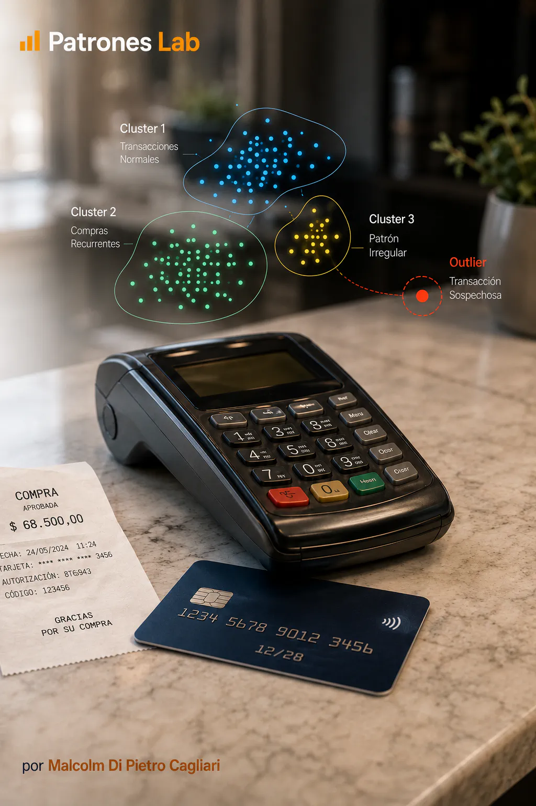
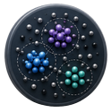

MACHINE LEARNING · PROJETO 08

Projeto 10 · Machine Learning
Modelo Machine Learning · Fraude com DBSCAN
Análise de transações com cartões de crédito para reconhecer padrões de comportamento e detetar operações atípicas. O projeto utiliza DBSCAN, um algoritmo de aprendizagem não supervisionada que forma grupos segundo a densidade dos registos e identifica transações isoladas.

CONTEXTO E OBJETIVO
O projeto trabalha com registos de operações realizadas com cartões de crédito e analisa as características de cada transação. A partir dessa informação identifica comportamentos habituais, analisa o agrupamento de operações semelhantes e deteta casos que se diferenciam dos restantes.
Para estudar essas diferenças utiliza-se DBSCAN, um método de aprendizagem automática que agrupa operações segundo a semelhança das suas características. O procedimento reconhece concentrações de transações semelhantes e destaca outras que ficam isoladas.
A análise procura compreender esses comportamentos e identificar operações atípicas para uma revisão mais detalhada. Cada caso pode depois ser avaliado com mais informação sobre o contexto da transação para determinar se requer uma investigação específica.
MODELO E ANÁLISE
PREPARAÇÃO DAS OPERAÇÕES
O trabalho utiliza as variáveis registadas nas transações, como o montante e outras características de cada operação. É revista a qualidade dos dados e preparadas as variáveis que permitem comparar os registos segundo critérios consistentes.
A comparação baseia-se na semelhança entre as operações. Para considerar variáveis expressas em intervalos numéricos diferentes, o projeto ajusta as suas escalas antes de identificar os grupos.
IDENTIFICAÇÃO DE GRUPOS COM DBSCAN
DBSCAN identifica áreas onde se concentram operações com características semelhantes e forma grupos a partir dessas concentrações. Considera que registos estão suficientemente próximos e quantas operações semelhantes existem em redor de cada um. Assim, o agrupamento resulta da distribuição observada nos dados.
O resultado permite distinguir três situações:
- Operações de núcleo: rodeadas por vários registos semelhantes, ajudam a formar os grupos.
- Operações de fronteira: próximas de um grupo de transações semelhantes.
- Operações isoladas: ficam fora dos grupos identificados e recebem a etiqueta -1.
ANÁLISE DAS OPERAÇÕES ATÍPICAS
Os gráficos mostram a distribuição das operações e as características partilhadas pelos registos de cada grupo. Também permitem comparar os grupos com os casos isolados e ajudam a reconhecer comportamentos que merecem uma revisão mais detalhada.
A etiqueta -1 assinala uma operação atípica segundo os critérios utilizados na análise. O seu montante e as restantes características podem ser estudados juntamente com informação adicional para avaliar se se trata de uma compra pouco habitual ou de uma situação que requer investigação.
ENTREGA E APRENDIZAGEM
O projeto inclui um notebook Python com a preparação dos dados, o agrupamento através de DBSCAN e os gráficos para explorar os resultados. Este material permite analisar os grupos de operações e selecionar transações atípicas para uma revisão posterior.
Quando são incorporadas novas transações, o procedimento pode ser repetido para observar como mudam os grupos e que casos aparecem como atípicos nos dados atualizados. Manter os mesmos critérios de preparação facilita a comparação entre as duas análises.